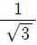
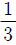
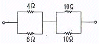
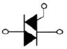
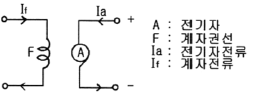

전기기능사 (2009-07-12 기출문제)
1과목: 전기 이론
1. △-△ 평형 회로에서 E = 200[V], 임피던스 Z = 3 +j4[Ω]일 때상전류 Ip[A]는 얼마인가?
- 30[A]
- 40[A]
- 50[A]
- 66.7[A]
(정답률: 65%)

2. 다음 중 콘덴서가 가지는 특성 및 기능으로 옳지 않은 것은?
- 전기를 저장하는 특성이 있다.
- 상호 유도 작용의 특성이 있다.
- 직류 전류를 차단하고 교류 전류를 통과 시키려는 목적으로 사용된다.
- 공진 회로를 이루어 어느 특정한 주파수만을 취급하거나 통과 시키는 곳 등에 사용된다.
(정답률: 42%)
3. 다음 중 콘덴서 접속법에 대한 설명으로 알맞은 것은?
- 직렬로 접속하면 용량이 커진다.
- 병렬로 접속하면 용량이 적어진다.
- 콘덴서는 직렬 접속만 가능하다.
- 직렬로 접속하면 용량이 적어진다.
(정답률: 76%)
4. 다음 중 자기장 내에서 같은 크기 m[Wb]의 자극이 존재할 때 자기장의 세기가 가장 큰 물질은?(오류 신고가 접수된 문제입니다. 반드시 정답과 해설을 확인하시기 바랍니다.)
- 초합금
- 페라이트
- 구리
- 니켈
(정답률: 51%)
5. 공기 중에서 반지름 10[cm]인 원형 도체에 1[A]의 전류가 흐르면 원의 중심에서 자기장의 크기는 몇 [AT/m] 인가?
- 5[AT/m]
- 10[AT/m]
- 15[AT/m]
- 20[AT/m]
(정답률: 36%)
6. 공기 중에 10[μC]과 20[μC]를 1[m]간격으로놓을 때 발생되는 정전력[N]은?
- 1.8
- 2 x 10[N]
- 200[N]
- 98 x 10[N]
(정답률: 64%)
7. 전압계의 측정 범위를 넓히기 위한목적으로 전압계에 직렬로 접속하는 저항기를 무엇이라 하는가?
- 전위차계(potentiometer)
- 분압기(voltage divider)
- 분류기(shunt)
- 배율기(multiplier)
(정답률: 75%)
8. 저항 8[Ω]과 유도 리액턴스 6[Ω]이 직렬로 접속된 회로에 200[V]의 교류 전압을 인가하는 경우 흐르는 전류[A]와 역률[%]은 각각 얼마인가?
- 20[A],80%
- 10[A], 60%
- 20[A], 60%
- 10[A], 80%
(정답률: 56%)
9. “회로의 접속점에서 볼 때 , 접속점에 흘러들어오는 전류의 합은 흘러 나가는 전류의 합과 같다”라고 정의되는 법칙은?
- 키르히호프의 제1법칙
- 키르히호프의 제2법칙
- 플레밍의 오른손 법칙
- 앙페르의 오른 나사 법칙
(정답률: 84%)
10. 비사인파의 일반적인 구성이 아닌 것은?
- 삼각파
- 고조파
- 기본파
- 직류분
(정답률: 75%)
11. 평형 3상 교류회로의 Y회로로부터 △회로로 등가 변환하기 위해서는 어떻게 하여야 하는가?
- 각 상의 임피던스를 3배로 한다.
- 각 상의 임피던스를 배로 한다.
- 각 상의 임피던스를

로 한다. - 각 상의 임피던스를

로 한다.
(정답률: 55%)
12. A1=a1+jb1, A2=a2+jb2 인 두 벡터의 차 A를 구하는 식은?
- (a1-a2)+j(b1-b2)
- (a1+a2)-j(b1+b2)
- (a1-b1-)+j(a2-b2)
- (a1-b1)-j(a2-b2)
(정답률: 50%)
13. 20[˚C]의 물 100[ℓ]를 2시간 동안에 40[˚C]로 올리기 위하여 사용할 전열기의 용량은 약 몇 [kW] 이면 되겠는가?(단, 이 때 전열기의 효율은 60[%]라 한다.)
- 1.938[kW]
- 3.876[kW]
- 1938[kW]
- 3876[kW]
(정답률: 34%)
14. 다음 중 전력량 1[J]과 같은 것은?
- 1[cal]
- 1[W ㆍs]
- 1[kgㆍm]
- 1[Nㆍm]
(정답률: 66%)
15. 전지(battery)에 관한 사항이다. 감극제(depolarizer)는 어떤 작용을 막기 위해 사용되는가?
- 분극작용
- 방전
- 순환전류
- 전기분해
(정답률: 70%)
16. 0.25[H]와 0.23[H]의 자체 인덕턴스를 직렬로 접속할 때 합성 인덕턴스의 최대값은 약 몇 [H] 인가?
- 0.48[H]
- 0.96[H]
- 4.8[H]
- 9.6[H]
(정답률: 37%)
17. 두 코일이 있다. 한 코일에 매초 전류가 150[A]의 비율로 변할 때 다른 코일에 60[V]의 기전력이 발생하였다면, 두 코일의 상호 인덕턴스는 몇 [H] 인가?
- 0.4[H]
- 2.5[H]
- 4.0[H]
- 25[H]
(정답률: 34%)
18. 그림과 같은 회로에서 합성저항은 몇 [Ω] 인가?

- 6.6[Ω]
- 7.4[Ω]
- 8.7[Ω]
- 9.4[Ω]
(정답률: 79%)
19. 비정현파를 여러 개의 정현파의 합으로 표시하는 방법은?
- 중첩의 원리
- 노튼의 정리
- 푸리에 분석
- 테일러의 분석
(정답률: 61%)
20. 다음 중 자기력선(line of magnetic force)에 대한 설명으로 옳지 않은 것은?
- 자석의 N극에서 시작하여 S극에서 끝난다.
- 자기장의 방향은 그 점을 통과하는 자기력선의 방향으로 표시 한다.
- 자기력선은 상호간에 교차한다.
- 자기장의 크기는 그 점에 있어서 자기력선의 밀도를 나타낸다.
(정답률: 81%)
2과목: 전기 기기
21. 무부하시 유도전동기는 역률이 낮지만 부하가 증가하면 역률이 높아지는 이유로 가장 알맞은 것은?
- 전압이 떨어지므로
- 효율이 좋아지므로
- 전류가 증가하므로
- 2차측 저항이 증가하므로
(정답률: 32%)
22. 200[V], 10[kW], 3상유도 전동기의 전부하 전류는 약 몇 [A]인가?(단, 효율과 역률은 각각 85[%]이다.)
- 30[A]
- 40[A]
- 50[A]
- 60[A]
(정답률: 33%)
23. SCR 2개를 역병렬로 접속한 그림과 같은 기호의 명칭은?

- SCR
- TRIAC
- GTO
- UJT
(정답률: 75%)
24. 낙뢰, 수목 접촉, 일시적인 섬락 등 순간적인 사고로 계통에서 분리된 구간을 신속히 계통에 투입시킴으로써 계통의 안정도를 향상시키고 정전 시간을 단축시키기 위해 사용되는 계전기는?
- 차동 계전기
- 과전류 계전기
- 거리 계전기
- 재폐로 계전기
(정답률: 58%)
25. 다음 중 변압기 무부하손의 대부분을 차지하는 것은?
- 유전체손
- 동손
- 철손
- 저항손
(정답률: 60%)
26. 4극인 동기전동기가 1800[rpm]으로 회전할 때 전원 주파수는 몇 [Hz] 인가?
- 50[Hz]
- 60[Hz]
- 70[Hz]
- 80[Hz]
(정답률: 80%)
27. 분권발전기는 잔류 자속에 의해서 잔류 전압을 만들고 이때 여자 전류가 전류 자속을 증가시키는 방향으로 흐르면, 여자 전류가 점차 증가하면서 단자 전압이 상승하게 된다. 이러한 현상을 무엇이라 하는가?
- 자기 포화
- 여자 조절
- 보상 전압
- 전압 확립
(정답률: 39%)
28. 직류 발전기가 있다. 자극 수는 6, 전기자 총 도체수 400 매극 당 자속 0.01[Wb], 회전수는 600[rpm]일 때 전기자에 유기되는 기전력은 몇 [V] 인가?(단, 전기자 권선은 파권이다.)
- 40[V]
- 120[V]
- 160[V]
- 180[V]
(정답률: 61%)
29. 다음 중 2대의 동기발전기가 병렬운전하고 있을 때 무효횡류(무효순환전류)가 흐르는 경우는?
- 부하 분담에 차가 있을 때
- 기전력의 주파수에 차가 있을 때
- 기전력의 위상에 차가 있을 때
- 기전력의 크기에 차가 있을 때
(정답률: 34%)
30. 1차 전압 3300[V], 2차 전압 220[V]인 변압기의 권수비(turnratio)는 얼마인가?
- 15
- 220
- 3300
- 7260
(정답률: 71%)
31. 그림과 같은 접속은 어떤 직류전동기의 접속인가?

- 타여자전동기
- 분권전동기
- 직권전동기
- 복권전동기
(정답률: 66%)
32. 변압기를 △ - Y 결선(delta-star connection)한 경우에 대한 설명으로 옳지 않은 것은?
- 1차 선간전압 및 2차 선간전압의 위상차는 60˚ 이다.
- 제3조파에 의한 장해가 적다.
- 1차 변전소의 승압용으로 사용된다.
- Y결선의 중성점을 접지할 수 있다.
(정답률: 54%)
33. 회전자 입력 10[kW], 슬립 4[%]인 3상 유도 전동기의 2차 동손은 몇 [kW] 인가?
- 0.4[kW]
- 1.8[kW]
- 4.0[kW]
- 9.6[kW]
(정답률: 44%)
34. 정류자와 접촉하여 전기자 권선과 외부 회로를 연결시켜 주는 것은?
- 전기자
- 계자
- 브러시
- 공극
(정답률: 74%)
35. 발전기를 정격 전압 220[V]로 운전하다가 무부하로 운전하였더니, 단자 전압이 253[V]가 되었다. 이 발전기의 전압 변동률은 몇 [%] 인가?
- 15[%]
- 25[%]
- 35[%]
- 45[%]
(정답률: 69%)
36. 정지된 유도전동기가 있다. 1차 권선에서 1상의 직렬권선 회수가 100회이고, 1극당 평균 자속이 0.02[Wb], 주파수가 60[Hz]이라고 하면, 1차 권선의 1상에 유도되는 기전력의 실효값은 약 몇[V] 인가?(단, 1차 권선 계수는 1로 한다.)
- 377[V]
- 533[V]
- 635[V]
- 730[V]
(정답률: 32%)
37. 변압기 외함 내에 들어 있는 기름을 펌프를 이용하여 외부에 이는 냉각 장치로 보내서 냉각 시킨 다음, 냉각된 기름을 다시 외함으로 내부로 공급하는 방식으로, 냉각효과가 크기 때문에 30000[kVA] 이상의 대용량의 변압기에서 사용하는 냉각 방식은?
- 건식풍냉식
- 유입자냉식
- 유입풍냉식
- 유입송유식
(정답률: 52%)
38. 3[kW], 1500[rpm] 유도 전동기의 토크[N˙m]는 약 얼마인가?
- 1.91[Nㆍm]
- 19.1[Nㆍm]
- 29.1[Nㆍm]
- 114.6[Nㆍm]
(정답률: 48%)
39. 다음 중 유도전동기의 속도제어에 사용되는 인버터 장치의 약호는?
- CVCF
- VVVF
- CVVF
- VVCF
(정답률: 60%)
40. 게이트(gate)에 신호를 가해야만 작동되는 소자는?
- SCR
- MPS
- UJT
- DIAC
(정답률: 65%)
3과목: 전기 설비
41. 다음 중 굵은 AL선을 박스 안에서 접속하는 방법으로 적합한 것은?
- 링 스리브에 의한 접속
- 비틀어 꽂는 형의 전선 접속기에 의한 방법
- C형 접속기에 의한 접속
- 맞대기용 스리브에 의한 압착접속
(정답률: 46%)
42. 2종 금속 몰드 공사에서 같은 몰드 내에 들어가는 전선은 피복 절연물을 포함하여 단몇적의 총합이 몰드내의 내면 단면적의 몇 [%] 이하로 하여야 하는가?
- 20[%]이하
- 30[%]이하
- 40[%]이하
- 50[%]이하
(정답률: 51%)
43. 아웃렛 박스 등의 녹아웃의 지름이 관의 지름보다 클 때에 관을 박스에 고정 시키기 위해 쓰는 자료의 명칭은?
- 터미널 캡
- 링 리듀서
- 엔트렌스 캡
- C형 엘보
(정답률: 67%)
44. PVC(Polvvinyl chloride pipe) 전선관의 표준 규격품 1본의 길이는 몇 [m] 인가?
- 3.0[m]
- 3.6[m]
- 4.0[m]
- 4.5[m]
(정답률: 54%)
45. 다음 그림기호의 배선 명칭은?
- 천장 은폐배선
- 바닥 은폐배선
- 노출 배선
- 바닥면 노출배선
(정답률: 77%)
46. 전선을 접속할 때 전선의 강도를 몇 [%]이상 감소시키지 않아야 하는가?
- 10[%]
- 20[%]
- 30[%]
- 40[%]
(정답률: 77%)
47. 1종 가요전선관을 구부릴 경우의 곡률 반지름은 관 안지름의 몇 배 이상으로 하여야 하는가?
- 3배
- 4배
- 5배
- 6배
(정답률: 74%)
48. 변류비 100/5[A]의 변류기(C.T)와 5[A]의 전류계를 사용하여 부하전류를 측정한 경우 전류계의 지시가 4[A] 이었다. 이 때 부하전류는 몇 [A] 인가?
- 30[A]
- 40[A]
- 60[A]
- 80[A]
(정답률: 41%)
49. 저압 가공전선과 고압 가공전선을 동일 지지물에 시설하는 경우 상호 이격거리는 몇[cm] 이상이어야 하는가?
- 20[cm]
- 30[cm]
- 40[cm]
- 50[cm]
(정답률: 43%)
50. 건물의 모서리(직각)에서 가요 전선관을 박스에 연결할 때 필요한 접속기는?
- 스틀렛 박스 커넷터
- 앵글 박스 커넷터
- 플렉시블 커플링
- 콤비네이션 커플링
(정답률: 57%)
51. 전주의 길이별 땅에 묻히는 표준깊이에 관한 사항이다 전주의 길이가 16[m]이고, 설계하중이 6.8kN 이하의 철근 콘크리트주를 시설할 때 땅에 묻히는 표준깊이는 최소 얼마 이상이어야 하는가?
- 1.2[m]
- 1.4[m]
- 2.0[m]
- 2.5[m]
(정답률: 58%)
52. 조명기구의 용량 표시에 관한 설명이다. 다음 중 F40의 설명으로 알맞은 것은?
- 수은등 40[W]
- 나트륨등 40[W]
- 메탈 핼라이드등 40[W]
- 형광등 40[W]
(정답률: 69%)
53. 사용전압이 400[V] 미만인 경우에 가요전선관 및 부속품은 몇 종 접지공사를 하여야 하는가?(관련 규정 개정전 문제로 여기서는 기존 정답인 3번을 누르면 정답 처리됩니다. 자세한 내용은 해설을 참고하세요.)
- 제1종 접지공사
- 제2종 접지공사
- 제3종 접지공사
- 특별제3종 접지공사
(정답률: 73%)
54. 금속덕트 공사에 관한사항이다. 다음 중 금속 덕트의 시설로서 옳지 않는 것은?
- 덕트의 끝부분은 열어 놓을 것
- 덕트를 조영재에 붙이는 경우에는 덕트의 지지점간의 거리를 3m 이하로 견고하게 시설할 것
- 덕트의 뚜껑은 쉽게 열리지 않도록 시설할 것
- 덕트 상호간은 견고하게 또한 전기적으로 완전하게 접속할 것
(정답률: 71%)
55. 애자사용공사를 건조한 장소에 시설하고자 한다. 사용 전압이 400[V] 미만인 경우 전선과 조영재 사이의 이격거리는 최소 몇[㎝]이상이어야 하는가?
- 2.5[㎝] 이상
- 4.5[㎝] 이상
- 6.0[㎝] 이상
- 12[㎝] 이상
(정답률: 57%)
56. 교통신호등 제어장치의 금속제 외함의 접지공사는?(관련 규정 개정전 문제로 여기서는 기존 정답인 3번을 누르면 정답 처리됩니다. 자세한 내용은 해설을 참고하세요.)
- 제1종 접지공사
- 제2종 접지공사
- 제3종 접지공사
- 특별제3종 접지공사
(정답률: 63%)
57. 가연성 분진(소맥분, 전분, 유황 기타 가연성 먼지 등)으로 인하여 폭발할 우려가 있는 저압 옥내 설비 공사로 적절하지 않는 것은?
- 케이블 공사
- 금속관 공사
- 합성수지관 공사
- 플로어 덕트 공사
(정답률: 70%)
58. 다음 중 과전류 차단기를 설치하는 곳은?
- 간선의 전원측 전선
- 접지공사의 접지선
- 다선식 전로의 중성선
- 접지공사를 한 저압 가공 전선로의 접지측 전선
(정답률: 55%)
59. 다음 중 금속전선관 공사에서 나사내기에 사용되는 공구는?
- 토치램프
- 벤더
- 리머
- 오스터
(정답률: 75%)
60. 가공전선로의 지지물에 시설하는 지선의 시설에 맞지 않는 것은?
- 지선의 안전율은 2.5 이상일 것
- 지선의 안전율이 2.5 이상일 경우에 허용 인장하중의 최저는 4.31kN으로 할 것
- 소선의 지름이 1.6mm 이상의 동선을 사용한 것일 것
- 지선에 연선을 사용할 경우에는 소선 3가닥 이상의 연선일 것
(정답률: 55%)
상전류 I = E/Z = 200/(3+j4) = 40[-j15] A
따라서, 상전류의 크기는 40A이며, 이는 보기 중에서 "40[A]"가 정답인 이유입니다.